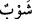

Burada “ ” (sonra) edatı bu kaynar suyun zakkumu yedikten belli bir zaman sonra
” (sonra) edatı bu kaynar suyun zakkumu yedikten belli bir zaman sonra
kendilerine verileceğini ifade eder. Yine bu edat, burada bir rütbe ve tertip de ifade
edebilir. Şöyle ki kendilerine içirilecek olan bu kaynar su zakkum yemeğine göre daha
ağır daha şiddetli ve daha kuvvetli olunca içecekleri bu kaynar su, yiyecekleri zakkum
yemeğinden rütbe bakımından daha uzak ve ötede olmuş oldu. Buna göre cehennem ehli
hem pek çirkin ve nahoş olan bu zakkum yemeğini yeme ve hem de zakkum yemeğinden
daha çirkin ve daha nahoş olan kaynar suyu içme durumunda olacaklar. Bu durumun ikisi
de gerçekleşecektir.
“ karışım; “ ise son derece kaynar su demektir. Yani cehennem ehli içtikleri
zaman bağırsaklarını paramparça edecek olan son derece kaynar suyla karıştırılmış
bulunan kan yahut siyah irin yahut irinli su içeceklerdir.
68. Sonra kesinlikle onların dönüşü, çılgın ateşe olacaktır.
“Sonra kesinlikle onların dönüşü, çılgın ateşe” yani cehennemin dereke ve azap
hücrelerine “olacaktır.” Zira zakkum ve kaynar su henüz onlar cehenneme girmeden
önce ilk etapta onlara takdim edilir. Hamîm’in cehennemin dışında olduğu da
söylenmiştir. Allah Teâlâ şöyle buyuruyor: “İşte bu, suçluların yalanladıkları
cehennemdir. Onlar, cehennemle kaynar su arasında dolaşır dururlar” (er-Rahman
55/43-44). Cehennem ehli çılgın ateşteki (cahîm) yerlerinden zakkum ağacına
götürülürler. Karınları doluncaya kadar zakkum ağacından yerler ve sonra kendilerine
kaynar su içirilir. Daha sonra develerin su havzasından çevrilmesi gibi buradan tekrar
çılgın ateşe çevrilirler. İbn Mes’ud’un (r.a.) “ şeklinde okuması da bu
mânâyı teyid eder.
Hadis-i şerifte şöyle buyrulmuştur: “Ey insanlar! Allah’tan korkunuz. Ancak
Müslümanlar olarak can veriniz. Şayet zakkumdan bir damla şu dünyaya damlasa
tüm dünyayı dünya halkına zehir zindan yapar.”[210] Yani hayat âtıl ve felç olur. Ya
yiyeceği ve içeceği yalnız bu olup başka yiyeceği olmayanın hali nicedir?!
69, 70. Kuşkusuz onlar atalarını dalâlette buldular da peşlerinden koşup gittiler.
“Kuşkusuz onlar atalarını dalâlette buldular.” Bu kavl-i ilâhî, cehennem ehlinin ne
kendilerinin ne de babalarının tutunacakları hiçbir delil, dayanak ve kaynakları
olmaksızın dinde körü körüne babalarını taklit etmelerinden dolayı zikredilen çeşitli